Santa Clara University
2026 –Current undergrad, focused on autonomous and bio robotics.
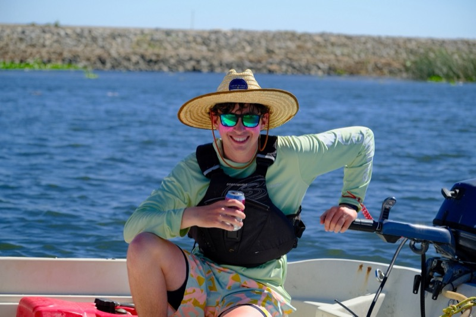
Mechanical & Bioengineering, Santa Clara University
I enjoy building things, but I also love getting outside and spending time with my family. I golf as much as I can (I've gotten my handicap down to the low single digits), and I sail for fun whenever I get the chance.
I've always been drawn to robotics projects, but as I've gotten busier I started picking up software-based projects too. I'm pretty AI-focused these days: I use it a lot as an aid in my own work, and I'm learning how to build my own models, not just for robotics, but for pretty much everything.
I got hooked on robotics in high school, where I was Fabrication Lead for FRC Team 9038 (SF Unity). I was the person who turned other people's CAD models into actual metal, which is how I fell in love with CNC machining and CAM programming. These days that same itch shows up in software too: I like taking an idea all the way from "how would this even work" to something I can actually watch run, whether that's a robot arm figuring out how to reach around an obstacle in simulation, or a gimbal mechanism physically tracking a target.
Outside of robots: I DJ, which has taught me more about timing and flow than I expected it to. I build furniture when I want an excuse to run the CNC on something that isn't a robot part. And I once spent a long stretch of time researching whether focused microwaves could someday cauterize tissue inside the body, mostly because the question wouldn't leave me alone.
Experience
Current undergrad, focused on autonomous and bio robotics.
Member of SCU's Formula SAE team, building an open-wheel formula-style race car from the ground up. Good excuse to put the CAD and CNC background to work on something that has to survive being driven hard, not just pass an inspection.
I designed and built test modules that simulated realistic, life-like demonstrations of a medical device's deployment, which the team used to showcase functionality and support ongoing product development. Alongside the hands-on prototyping, I also did market analysis to explore future GI medical devices built on Eclipse's existing platform, and put together initial demo prototypes to get feedback from doctors on potential clinical benefits.
Fabrication
A diagonal walnut and maple striped top, CNC'd and glued up strip by strip, on hand-turned lathe legs with an X stretcher. The fun detail is in the two drawers: the fronts are cut with interlocking gear teeth, so pulling both drawers open meshes them together like an actual gearset. Taught me a lot about finishing wood well, and an honestly embarrassing amount about clamps and glue-up patience.
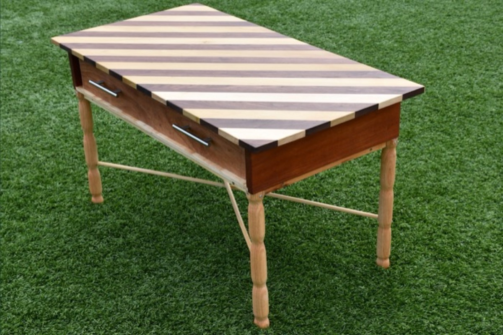
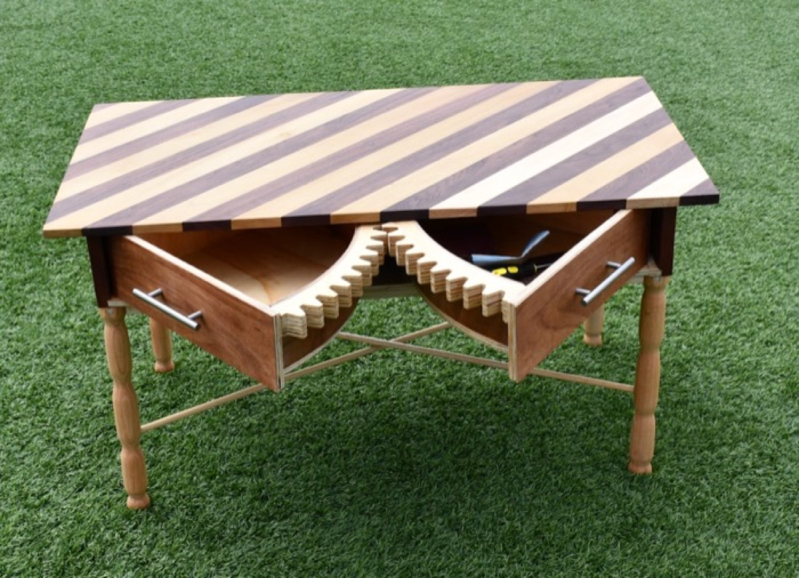
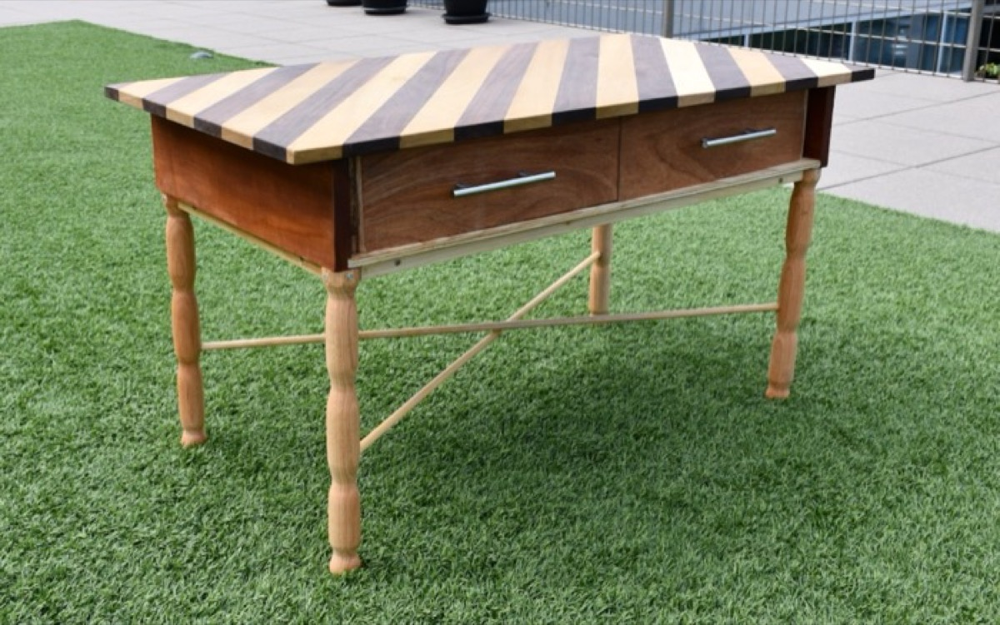
Simple shape, but tight tolerances with basically no room for variance, finished with a mill pass on the ends so the seams disappear completely, and set on aluminum tube legs bolted to a pair of blackened bases. This is where I learned how to CNC acrylic properly instead of melting it, and it doubles as a pen holder on my desk.
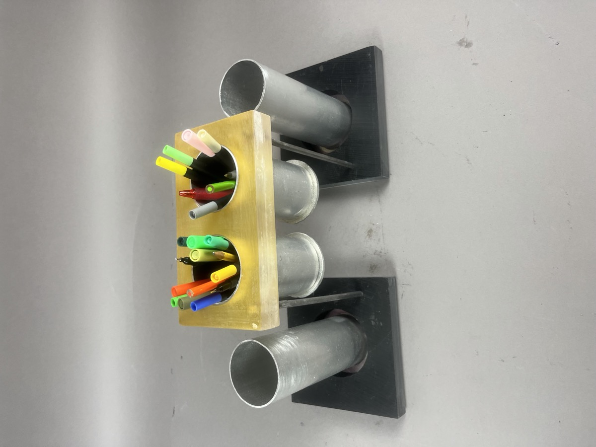
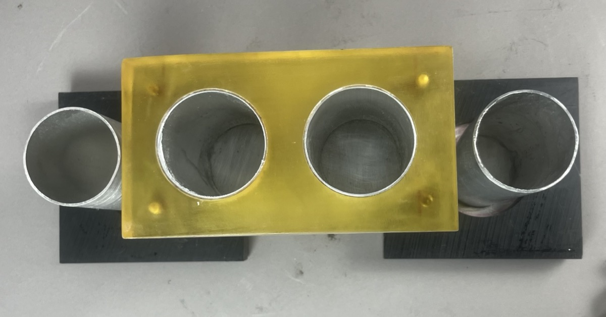
I didn't design the turret itself, but I'm the one who took the turret plates from CAD to finished parts: editing the CAD for pocketing, programming the toolpaths, and cutting them out of 6061 aluminum on the CNC at a precision the fit couldn't really afford to miss. Posting it here as an actual example of the toolpathing work described in the robotics section below, not just a description of it.
A speaker I built mainly to learn custom PCB design and fabrication, not just the software CAD/CAM side. The enclosure is laser-cut plywood, modeled in Rhino, with a backlit front panel and a driver mounted on the side. Inside, a small microcontroller runs the lighting while a Bluetooth audio receiver feeds into a custom amplifier board I designed in Autodesk Eagle, with screw terminals, a volume pot, and a barrel jack for power. Figuring out that board meant actually learning the difference between the analog audio path and the digital control side, not just reading about it.
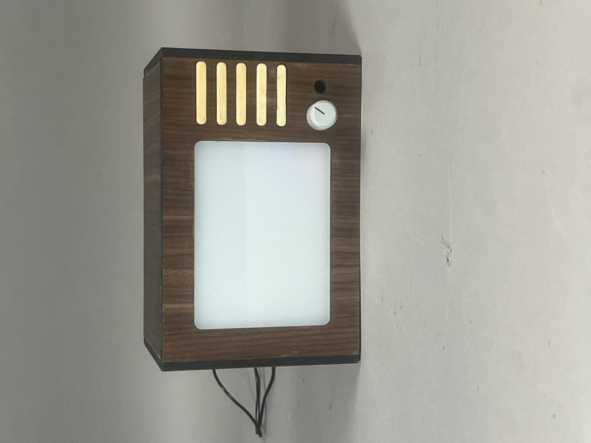
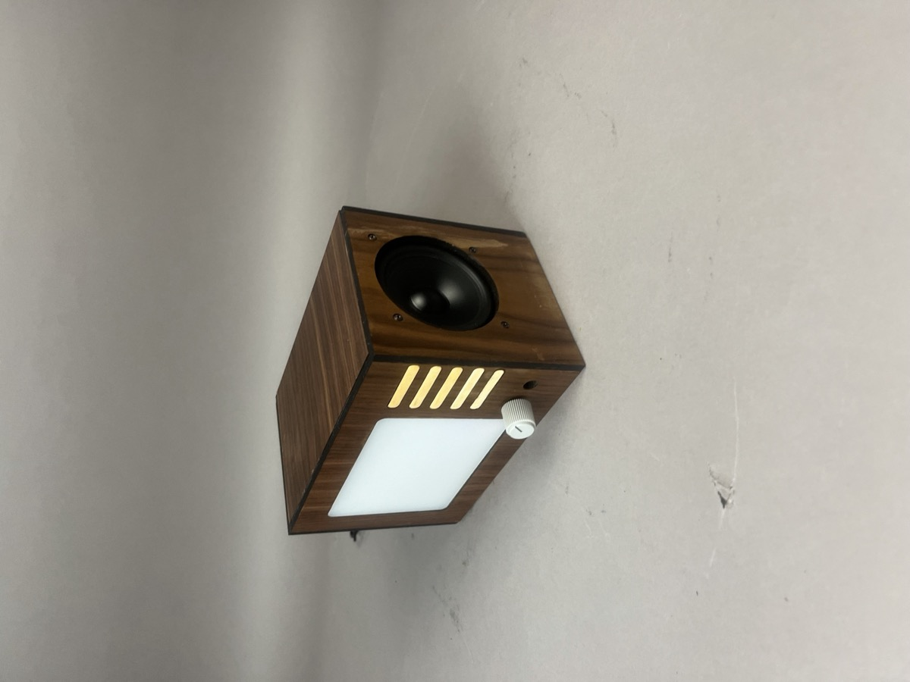
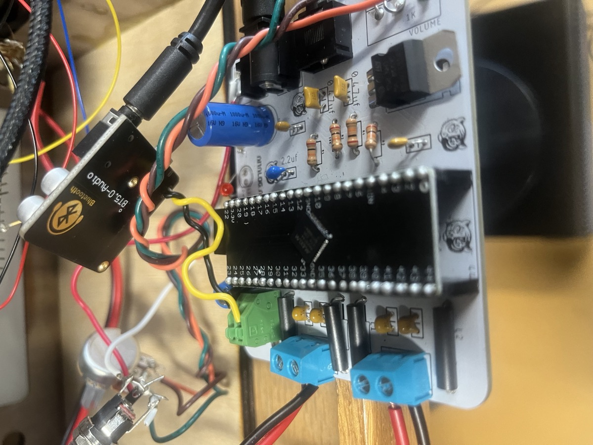
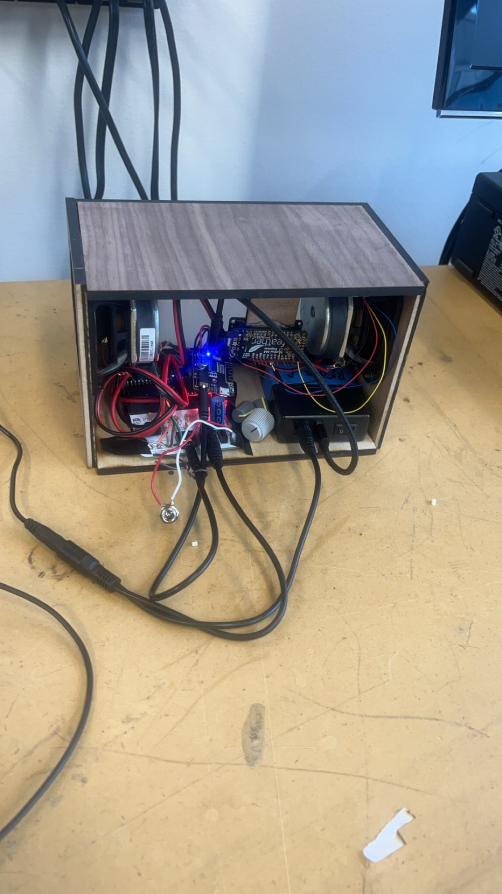
Robotics
During the 2025 to 2026 "REBUILT" season (my last one before heading to Santa Clara), I was Fabrication Lead for Team 9038, SF Unity, which meant I ran the shop side of the build: taking parts from CAD to finished, robot-ready components. The biggest change that season was bringing CNC routing and milling fully into our workflow and CAM-programming parts, including structural panels, that had previously been cut or fabricated by hand.
Our 2026 robot, nicknamed "Claude," was a turreted ball-shooting robot with a 40-ball capacity, a 28 by 27 by 26 inch starting footprint, a swerve drivebase, and a 420 degree turret. It won Excellence in Engineering at the East Bay District Event and took 3 playoff matches across two competitive events, the best result in team history. Nearly every structural plate and panel on that robot passed through my CAM programming before it hit the CNC.
Scope note: of the parts referenced here, everything was fabricated, CAM'd, and CNC'd by me, except the belly pan (sent out to a partner shop, since it was outside what our CNC could handle) and purchased COTS components (bearings, fasteners, motors, and the like).
A scratch-built demonstration gimbal designed to aim and stabilize a potential electromagnetic-radiation emitting device. The mount uses a geartrain to drive two independent rotation axes, so a payload can be pointed and held steady on a target the way a focused-energy or directional-antenna system would need to be aimed.
Built as the physical companion to the Masers in Medicine research, this gimbal is my demo of the surgical, movement-based wave-amplification side of that paper. It mechanically aims and holds a focused beam steady on a point, which is exactly what a maser system would need to do to converge energy at a focal point and drive internal cauterization. The paper covers the energy and thermal side of that problem. This gimbal is the part that would actually have to aim it.
Aiming a directional energy source precisely, whether that's RF, microwave, or something else, is just as much a mechanical problem as an electrical one. This project is really about the mechanism side of that: getting repeatable, controllable two-axis pointing out of simple gears and motors. It's a simpler cousin of the multi-joint targeting problem in robot-arm-sim, down in the software section, and the turret-tracking-sim project was written specifically to work out this gimbal's control loop.
Photos of the build go here once they're ready.
Software
Still no physical robotics hardware (working on it), so I build digitally first: kinematics, motion planning, and learned control, all worked out in code before any of it touches a motor. This is honestly where most of my interest is right now: autonomous robotics, imitation learning, and everything in between mechanism design and AI.
A full digital testbed for a 5-DOF robot arm, matched to a URDF reference and built to get me ready for an actual arm (probably an SO-101) and real imitation learning through LeRobot. Forward kinematics come from a DH transform chain, and inverse kinematics from damped least-squares, both written from scratch, no Pinocchio or PyBullet involved. An RRT planner finds collision-free paths around a moving obstacle, and a small neural net I wrote from scratch in plain NumPy (hand-written backprop and all) is trained by imitation to reproduce those paths.
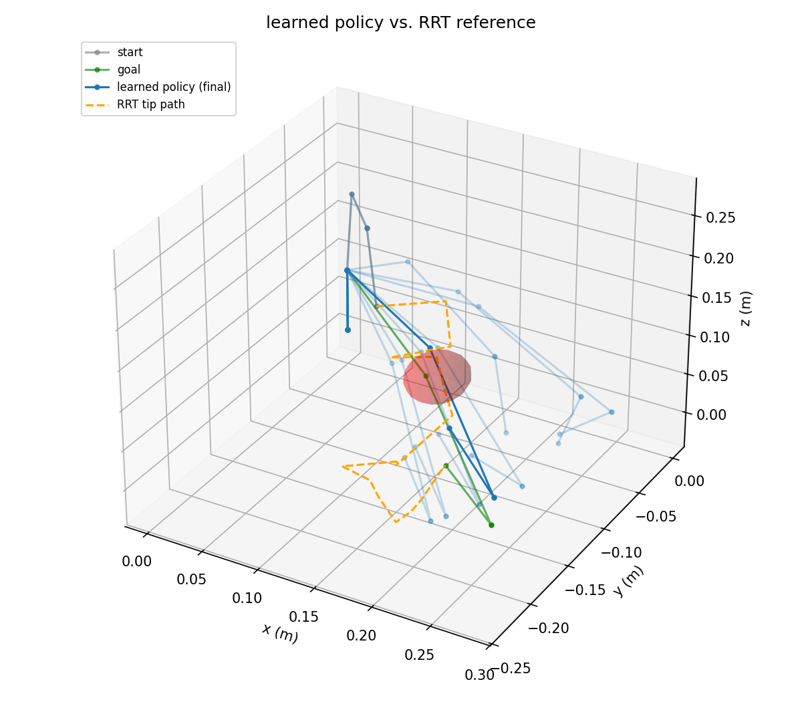
I want to be upfront that this is an honest result, not a cherry-picked one. About 62% of held-out tasks land within 0.6 radians of the goal, and about 60% stay fully collision-free. Documented limitations and next steps are in the README.
A simulation of the tracking logic for the gear-driven gimbal above. It uses proportional control with slew-rate limiting (modeling a real gearbox's max speed) and a deadzone so it settles down instead of jittering once it locks on. I built it to work out the control loop before any of it touched a real motor.
A three-class image classifier built on a frozen VGG16 base with a small trained head on top. It started as coursework, but I pushed past the base assignment by rebalancing the dataset (it was heavily skewed toward dogs) and adding a manual predict step so I could test the model on photos that weren't in the training set at all. Landed around 90%+ validation accuracy after 10 epochs.
I DJ, and I got tired of doing the "what should come next" math in my head before building a set. This analyzes BPM and musical key for a whole folder of tracks, maps each one onto the Camelot wheel (the same system rekordbox and Serato use), and plans a play order that keeps transitions clean: harmonically compatible keys, tempo-matched or half/double-time-matched BPMs, and a smooth energy flow. It can hand you an m3u playlist, or just render the whole thing as one continuous mixed audio file with real crossfades.
Ordering a crate well is an open-path traveling salesman problem underneath, so I used nearest-neighbor construction plus a 2-opt cleanup pass to actually solve it. Tested against synthetic click tracks with known BPM and key (no copyrighted audio in the repo), and then against my own library by hand, which is how I caught a fun bug: a beat tracker reading a 129 bpm track as 64.5 bpm (a classic octave error) was showing up as a wildly wrong transition note, even though the actual planning logic already knew half-time tracks mix fine. Fixed the display to match what the planner was already doing correctly.
Skills
Contact
I'm always happy to compare notes on robotics, fabrication, or research. Reach out any time.